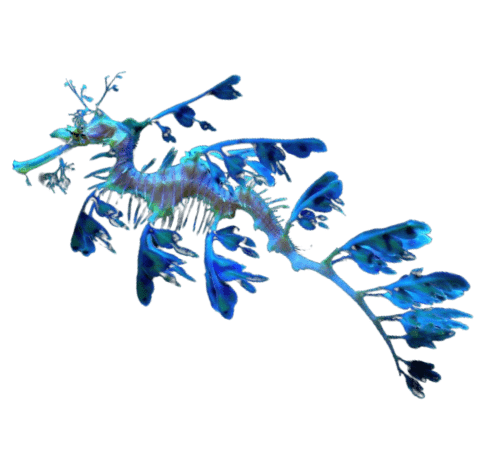
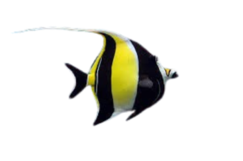
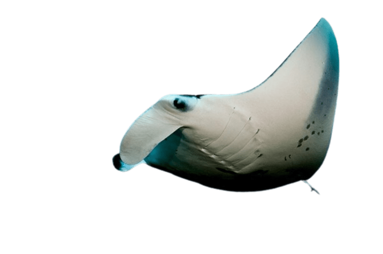
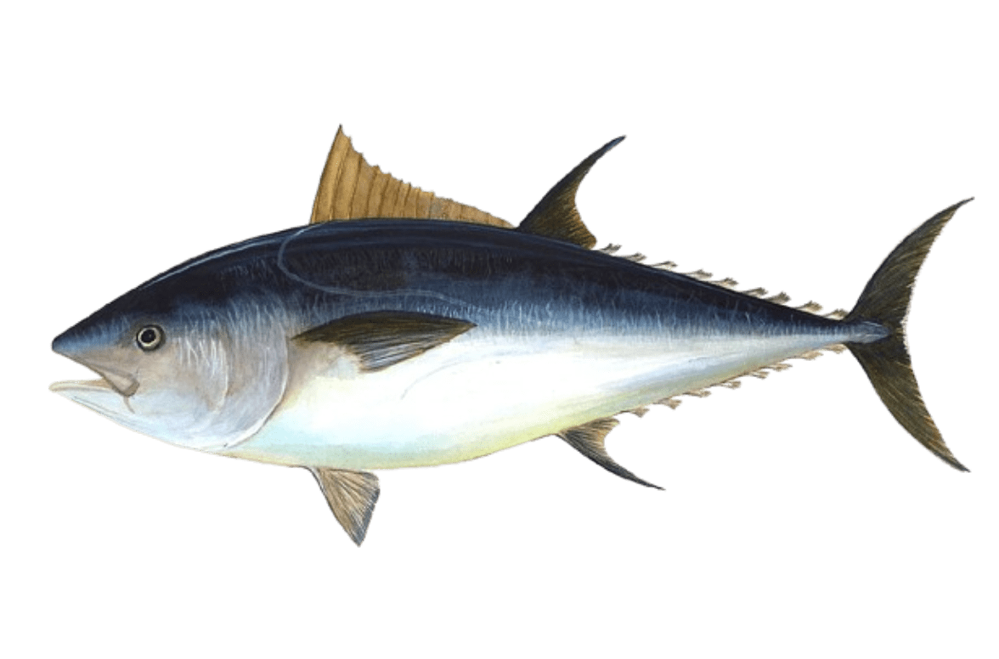
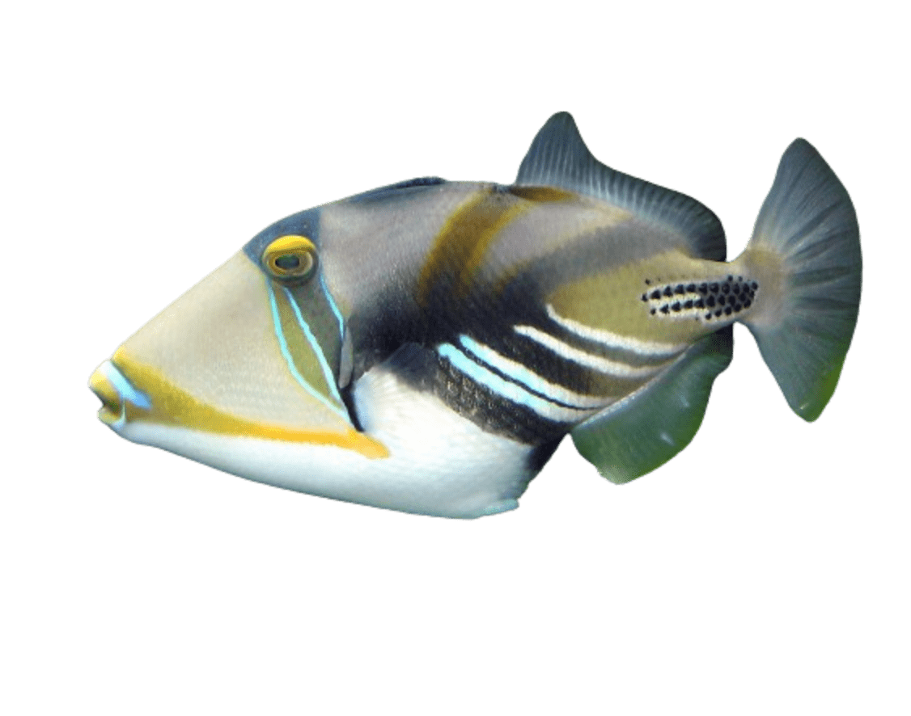
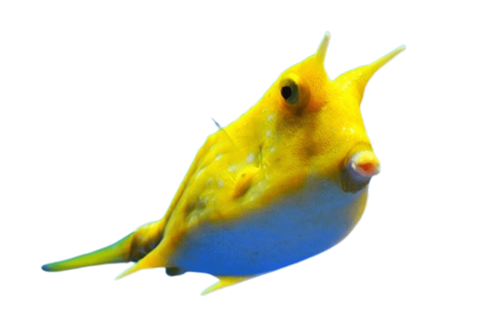

Natural bodies of water
THE LAKE
It is not just a body of water, it's a living, breathing ecosystem teeming with life and wonder. The calm and stillness of a lake's waters create an environment conducive to meditation, reflection, and spiritual connection. It serves as a sanctuary for inner peace and rejuvenation. The reflective surface of a lake symbolizes introspection and self-awareness. Just as the lake mirrors the surrounding environment, it encourages individuals to reflect on their thoughts, emotions, and experiences. Lakes stand out for their enclosed and self-contained nature, creating a sense of intimacy and sanctuary. Unlike rivers or oceans, which represent movement and vastness, lakes offer a sense of stability and permanence.
The river, a dynamic force coursing through the landscape, is more than just a flowing body of water—it embodies the pulse of life itself. Its ceaseless movement and ever-changing currents symbolize the journey of existence, carrying with it stories of the past and possibilities for the future. Like a steady heartbeat, the river's rhythm resonates with our own, drawing us into a state of harmony and connection with the natural world. Along its banks, we find solace and inspiration, as the gentle murmur of its waters whispers secrets of the universe. Unlike the stillness of lakes, rivers embody movement and vitality, reminding us of the constant ebb and flow of life's journey. Like a guide through the wilderness of life, the river offers a sense of direction and purpose, reminding us that, like its waters, we are constantly evolving and adapting to the ever-changing landscape of our experiences.
Rivers, often stretching across vast distances, are the lifeblood of landscapes around the world. From the mighty Amazon in South America to the majestic Nile in Africa, rivers carve their way through continents, shaping the terrain and sustaining ecosystems along their course. These waterways serve as vital arteries, transporting nutrients and sediment from mountain ranges to lowlands, supporting diverse habitats and providing essential resources for countless species. Spanning hundreds or even thousands of miles, rivers symbolize the enduring power of nature and the interconnectedness of life on Earth. Their length reflects the magnitude of their influence, weaving together communities, cultures, and ecosystems in an intricate tapestry of existence.
Some rivers are longer than you can imagine, obnoxiously long. They just keep flowing, never stopping. In a way, they mirror the challenges we face in life—endless and seemingly insurmountable. But like a river, we can navigate these obstacles with persistence and resilience. Just as a river finds its way around boulders and through valleys, we too can adapt and find new paths forward. And just as a river's flow eventually leads to the sea, our journey through life's challenges can lead to growth, wisdom, and a deeper understanding of ourselves.
THE SEA
If you're not already captivated by the sea, allow us to share its wonders with you. Picture endless horizons, where the sky kisses the ocean, creating breathtaking sunsets and sunrises that ignite the soul. Imagine the thrill of exploring vibrant coral reefs, home to a kaleidoscope of marine life, from colorful fish to majestic sea turtles. Envision the serenity of strolling along sandy beaches, with the soothing sound of waves lulling you into a state of tranquility. Whether you're drawn to the sea's boundless beauty, its rich biodiversity, or the sense of freedom it evokes, there's something truly magical about the ocean waiting to be discovered.

LEAFY DRAGON
Depth:
20m
Masters of disguise, camouflaged with leaf-like appendages, blending seamlessly into their surroundings in depths of the ocean.

EMPEROR SHRIMP
Depth:
50m
Tiny cleaners of the sea, rid parasites off sea cucumbers, contributing to the health of coral reef ecosystems.
BIGFIN REEF SQUID
Depth:
100m
HSpeedy swimmers using jet propulsion, darting through coral reefs, showcasing agility and grace underwater.
CROWN JELLY
Depth:
1000m
Regal appearance with crown-like structures, gliding gracefully in the depths, adding elegance to the oceanic realm.
ANGLER FISH
Depth:
2000m
Deep-sea predator with glowing lure, waiting in the darkness, exemplifying nature's ingenuity in the depths.
DUMBO OCTOPUS
Depth:
4000m
Adorable with ear-like fins, dwelling in the mysterious abyss, captivating with its otherworldly charm.
THE OCEAN
Humans only explored 5% of this body of water. That's why we can't really tell you what to expect. The ocean, a vast expanse of limitless horizons, embodies the essence of freedom and possibility. With no borders to confine its vastness, it symbolizes boundless opportunities and new beginnings. Like a blank canvas awaiting the stroke of an artist's brush, the ocean invites us to chart our own course and explore uncharted territories. It represents a realm of infinite potential, where dreams take flight and aspirations know no bounds. In its embrace, we find liberation from the constraints of everyday life, and the promise of a fresh start with each wave that kisses the shore. Let us set sail upon the ocean's endless blue, and discover the freedom that lies beyond the horizon. Treat this as your personal canvas, be free, drag and drop.




